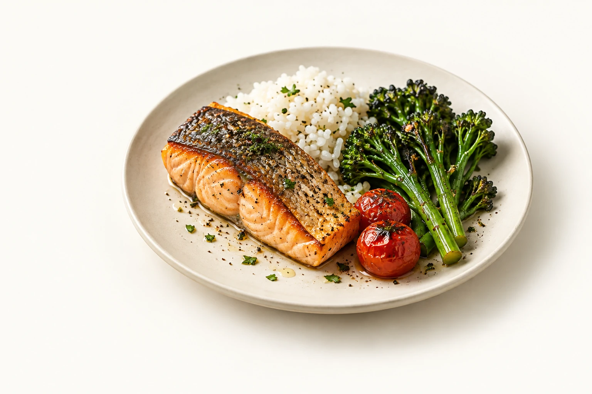
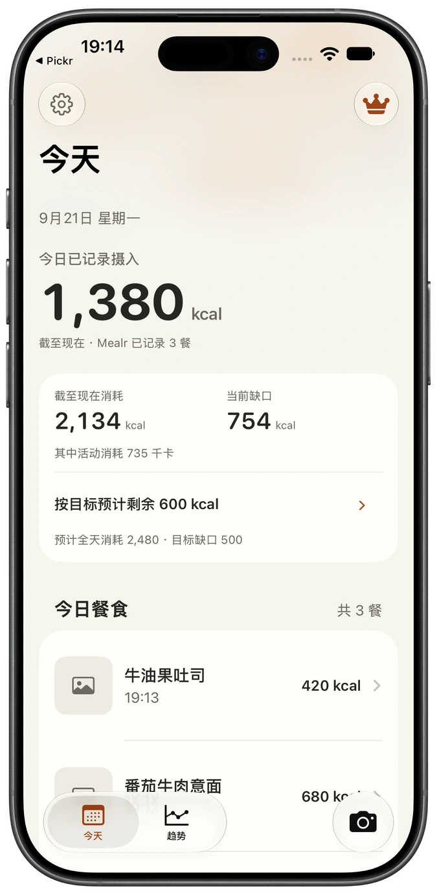
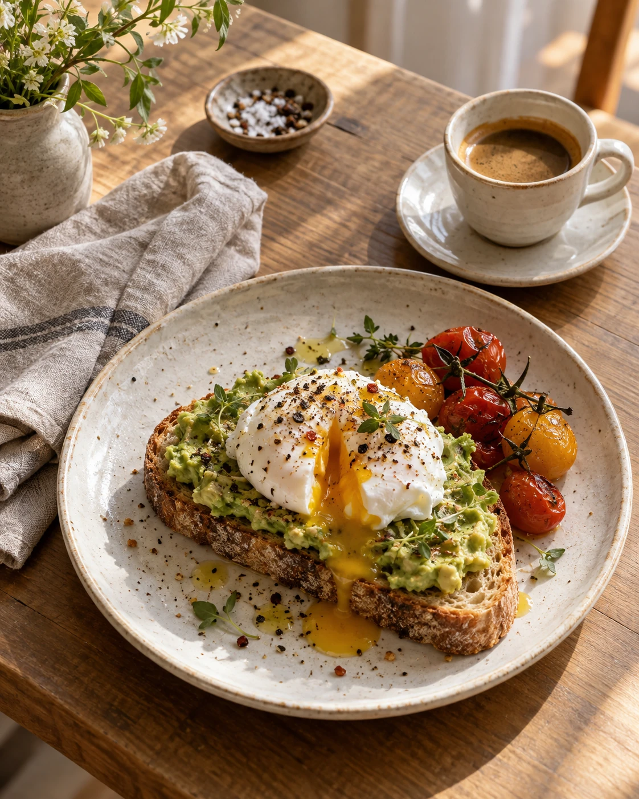
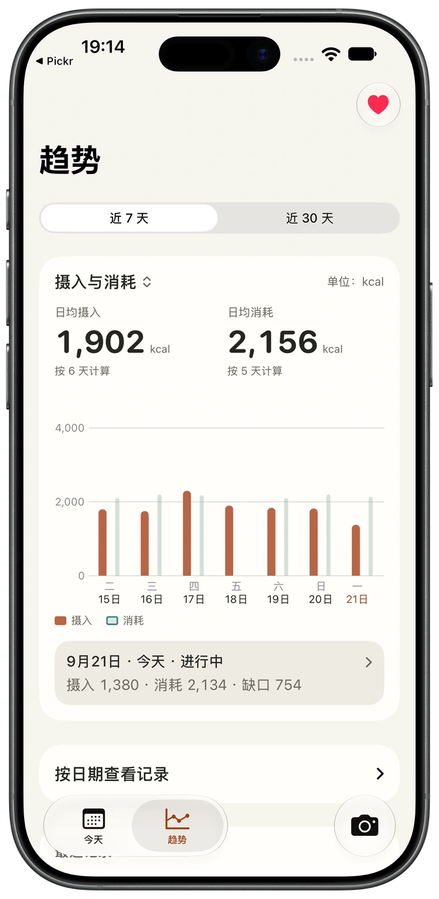
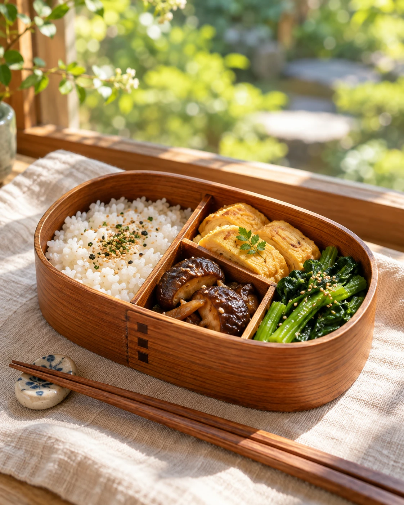

这一餐，拍下来
不用从搜索食物开始。拍下餐盘，或从相册选一张，让 Mealr 帮你估算这一餐。

拍下餐食
可以从不同角度补充照片，也可以用文字说明实际吃了多少。
确认估算
逐项查看识别结果，按实际份量调整，再保存这餐。
回到生活
记录留在手机里。下一次打开，今天吃了什么，一目了然。
一餐一餐
看见日常
在忙碌的一周里，也能回头看看自己。切换摄入与消耗、每日差值，找到适合自己的记录节奏。
App 实拍 · 简体中文界面 · 示例数据


不联网
也能记下一餐
选择本地模型，让 AI 就在 iPhone 上估算餐食。不必把照片传到云端，没网时也能继续记录。
- 照片留在手机
- 识别在本机完成，照片和补充说明不会上传。
- 选择权在你
- 在记录设置中切换本地模型或云端 API。本地识别失败时，不会自动转到云端。
本地模型首次使用需要加载，运行时可能增加耗电和发热；请以 App 内的设备与模型状态为准。
你的记录
由你掌握
餐食记录保存在本机。选择本地模型时，识别内容不上传；选择云端识别时，照片和补充文字会发送至 Mealr 服务。连接 Apple 健康始终需要你的授权。
了解数据如何处理你可能想知道
热量是精确测量吗？
不是。Mealr 根据照片估算热量，实际结果会受到份量、食材和烹饪方式影响。保存前可以调整；结果用于日常记录，不替代专业建议。
可以离线识别吗？
可以。在记录设置的“推理方式”中选择本地模型，模型可用时即可在设备上完成识别，无需联网。首次识别前需要加载；运行可能增加耗电和发热。本地识别失败不会自动转为云端识别。
需要连接 Apple 健康吗？
记录餐食不要求连接 Apple 健康。授权后，可以结合膳食能量、活动能量和基础能量查看摄入、消耗与热量差。
需要注册账号吗？
无需注册 Mealr 账号。餐食记录和照片保存在本机，购买与订阅由 Apple 处理。
在哪里了解会员和使用方式？
会员价格、试用资格和识别额度以 App 内当前显示为准。操作说明、权限设置和联系方式可在技术支持页面查看。
从下一餐开始
让记录简单一点，让生活照常。
App Store 下载 即将上线
使用与支持 也许你也会喜欢
同一位开发者的其他作品。